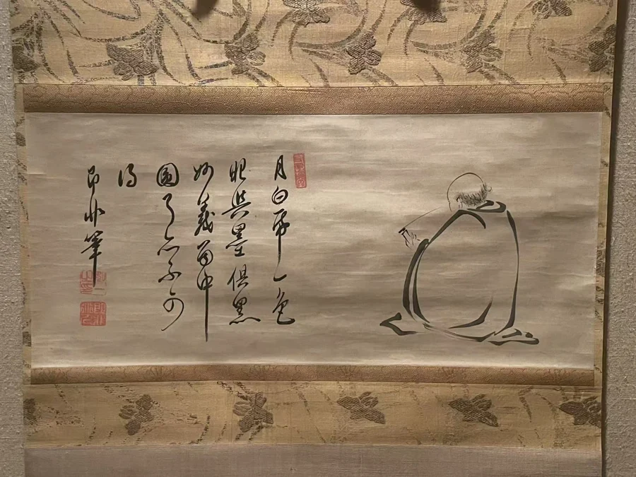

松声与月影 / J11
对月图／月下读经
即非如一 Jifei Ruyi／Sokuhi Nyoitsu
1661年以后 · 纸本水墨 · 大都会艺术博物馆 · 1975.268.79
僧人埋首读经，题赞却把视线引向月、纸、眼与墨：正在读的是什么，又是谁在看？

对月图／月下读经 · 全貌 · Merton摄画前细读
读经者偏在画面一侧，题字占据另一侧。背身的人物几乎不与观众对视；观看先落到身体的轮廓，再由题诗转向纸、墨、眼睛与月光。人像很小，却是把整幅横向空间联系起来的支点。
即非如一的题诗把月与纸归于白，把眼与墨归于黑，随后又说妙义虽在其中，仍“不可得”。黑白因此既是画面材料，也是诗里的比较。空白没有被一层白颜料填满，月光却可由这些词语和人物的专注一起唤起。 [1]
即非（1616—1671）是赴日的中国黄檗僧人，与隐元同处跨海的宗教网络。本件断为1661年以后。与只有一行字的墨迹相比，它让诗句与一位正在读经的人相邻：观者既读文字，也看另一个人如何阅读。 [1]
纸上的文字
月白紙一色 眼与墨俱黑
妙義个中圓 了亦不可得
据大都会公布题诗。 出处 ↓
收藏与流转
本件属于1975年进入大都会的 Harry G. C. Packard 收藏，取得方式为捐赠与购买结合，编号1975.268.79。 [来源]
资料注
题诗按馆方公布文字保留“与”“个”等字形。